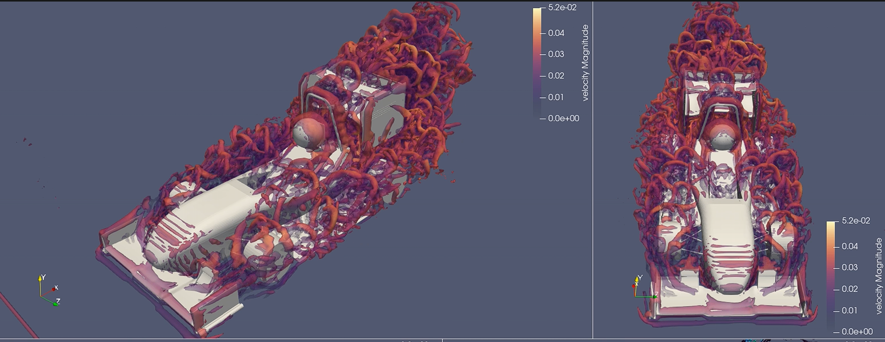

Formula Student ruined lectures for me (and why we should scrap fourth year)
2026-10-11 01:50:00
Imagine sitting in a 9am lecture watching a concept get introduced on the board for the first time, when just yesterday evening you were already applying the same thing at 10x the fidelity and complexity.
That's been most of my second year. Not bored exactly, just not impressed anymore. I'd watch something get derived and think "yeah, I already built that, and mine had more stuff in it". That's what a year and a bit on the Technion Formula Student team does to you.
This post is half a rant and half an honest attempt at figuring out if that feeling actually means something. Spoiler: I started out wanting to argue that we should drop the fourth year of the degree, and ended up somewhere more boring but probably more correct.
Why lectures stopped feeling impressive
The clearest example for me was fluids. In the course we spent weeks on Joukowski airfoils and conformal transformations, thin airfoil theory and potential flow around cylinders. At the same time, on the team, we were developing our own CFD methods and trying to understand how the wings interact with each other, and where viscous and turbulent effects take over. Those are exactly the things the classical models leave out on purpose (some of it is in my CFD post).

I know now that the idealised models are there for good reasons, but at the time switching between the two felt strange. In the evening I was dealing with the messy viscous version of the problem, and the next morning we were assuming viscosity away. At some point I told a friend the course was complete BS, and back then I meant it. I also said it a bit too loud, and the professor heard me. Not my proudest moment.
Looking back, I was wrong. CFD gives you nice colours whether or not the answer is right. What tells you if a result is believable is exactly the "boring" classical stuff: boundary layers, where separation should happen, what the turbulence model is actually assuming, dimensional analysis to sanity check the forces. If the solver says a wing makes some crazy amount of downforce, it's thin airfoil theory and basic Reynolds number intuition that make me go "no it doesn't" before I tell the rest of the team. The course wasn't BS. I just took it in the wrong order.
It's not only fluids. Statics, dynamics, materials, control: almost every core course has a moment where I think "we did this on the car, with real loads, a real deadline and real consequences if it's wrong". A lecture can't really compete with a part you designed coming back from the machine shop.
The weird part is that I've always been a curious person. I've always enjoyed learning new stuff, even when it had nothing to do with the things that really make me go crazy. So at first I thought something was off with me. Then I realised I hadn't stopped being curious at all. I was just getting my fix from somewhere else.
Do we even need a fourth year?
This is where the rant turns into an argument. First, to be clear: I think the basics from the first three years are hugely important. Fluids, structures, dynamics, thermo, control. That's the foundation. Fluids is a second year core course, and the story above is me learning the hard way why it belongs there. My problem is with what comes after.
The niche fourth year courses are supposed to be where you take the theory from the first three years and apply it to "practical" problems. That's a good goal. But doing it in a frontal lecture course just doesn't work. You don't learn to apply something by watching someone else apply it on a board and then taking an exam on it.
- The core is done by year 3. After that it's mostly electives and a final project.
- FS is a much better format for applying theory. You design to a ruleset, on a budget and a deadline, manufacture it, test it, then defend your design choices in front of judges. Nothing in a fourth year course comes close.
- Europe and the UK do 3-year bachelor's degrees and nobody thinks their engineers are bad.
Put like that it sounds like a slam dunk.
OK, to be fair
Then I tried arguing the other side and it got a lot less clean.
- FS members are self-selected. "FS people don't need year 4" says nothing about the average student who never touched a real project.
- FS usually makes degrees longer, not shorter. Plenty of team members take a lighter load and finish late. Hard to argue for cutting a year when the club itself adds one.
- The Europe comparison is misleading. A 3-year bachelor's there is normally followed by a 2-year master's, so it's 5 years to a "full" engineer, which is more than our 4.
- Accreditation and US grad admissions expect 4 years. A 3-year degree from Israel could make applying abroad harder, not easier.
The self-selection one is the one I thought about the most. What about the students who don't do FS? Honestly I think they're an argument for changing fourth year, not for keeping it. Big companies redo the entire training for new engineers anyway, no matter what courses you took. Smaller companies would rather take a student with real, useful experience than one with a list of fourth year electives. Nobody in industry is hiring you because of those courses. So even for students who never touched FS, a year where the industry does the teaching would be worth a lot more than another round of frontal courses.
What I'd actually change
So yes, I'd remove it. A three year bachelor's, with the useful parts of fourth year moved to where they actually work:
- Industry placement. Something like the practical semester a lot of German degrees have, where you spend a semester working at a company as part of the degree. Companies do the training and the application of theory in practice, since that's what they end up doing anyway.
- Keep the projects. FS already counts as a project in the degree, which kind of proves the point: the part of the later years that actually works is the project, not the courses. Keep that, drop the courses around it.
- An MSc for whoever wants more theory. 3+2, same as Europe. This also deals with the accreditation and US grad school problem, since anyone going that route ends up with a master's anyway.
And the first three years stay exactly as theory heavy as they are. Theory should stay theory, not get diluted with "real world" examples to make it feel practical. Applying it is what FS, placements and an MSc are for.
Ruined, or lucky?
Honestly, I know I'm lucky to even have this problem. Most people in my lectures haven't seen the stuff on the board actually do anything yet. I have, so the lecture feels slow. That's annoying, but it's not really ruining anything. If anything it makes the theory easier to get.
Fourth year is still a waste of time though.
If you're on an FS team (Technion or anywhere else) and feel the same, or think I'm completely wrong about fourth year, message me on twitter or linkedin.